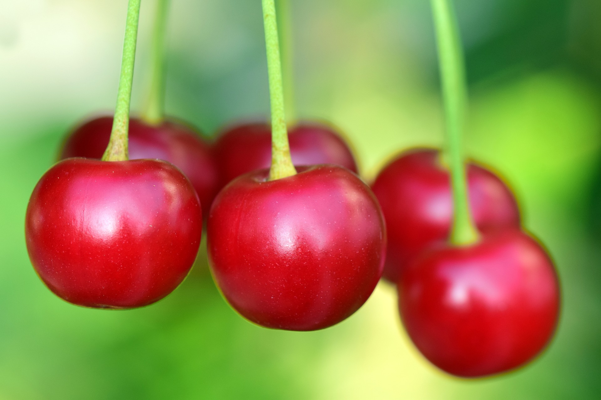

체리

체리, 벚나무의 열매. 종류는 수백 종이 있는데, 크게 단맛의 버찌와 신맛의 버찌로 분류된다. 가공하지 않은 천연 그대로 또는 통조림, 냉동품으로 시판되고 있다. 생식하는 것 외에 제과재료나 칵테일용, 프루트펀치용으로 사용되며, 시럽절임 통조림(빨갛게 염색한 후 시럽에 절인 것), 드레인체리(drained cherry, 표백 후 씨를 제거하여 70% 이상의 설탕액에 절인 것), 크리스탈체리(드레인체리를 건조하여 설탕결정을 석출한 것)가 있다. 드레인체리와 크리스탈체리를 마라스키노(maraschino)형이라고 한다.
[네이버 지식백과]